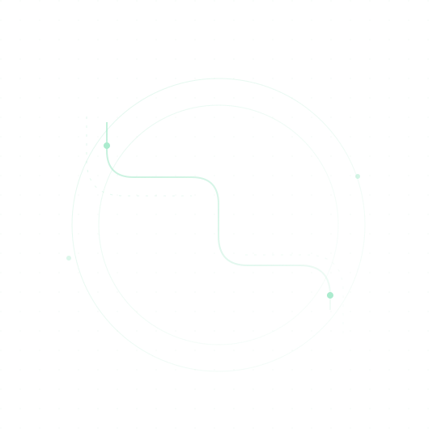

01 / UMWANDLUNG
USD↗USDT
Ausgehend von US-Dollar.
Besprechen Sie den Kauf von USDT mit USD-Mitteln. Finanzierungs- und Ausführungswege bedürfen der Bestätigung durch die Partner.
USD zu USDT besprechenVerbinden Sie den Liquiditätsbedarf Ihrer Institution mit Dienstleistungspartnern. Ein klarer Ablauf von der Anfrage bis zur Koordination der Abwicklung.
Für IDR und USDT
bestätigt das Team den Gegenwert.

Über Partner verbunden.
Ausführung vorbehaltlich Prüfung und Vereinbarung.
Von der Allokation in digitale Vermögenswerte bis zur Umwandlung von USDT-Beständen. Besprechen Sie zunächst den Bedarf Ihrer Institution.
Besprechen Sie den Kauf von USDT mit USD-Mitteln. Finanzierungs- und Ausführungswege bedürfen der Bestätigung durch die Partner.
USD zu USDT besprechenFragen Sie den Kauf von USDT für die Allokation in digitale Vermögenswerte und den Liquiditätsbedarf Ihrer Institution an.
IDR zu USDT besprechenKoordinieren Sie die Umwandlung von USDT-Beständen in Rupiah nach einem vereinbarten Ablauf und mit vereinbartem Abwicklungsziel.
USDT zu IDR besprechenWege, Netzwerke und Partner werden nach Prüfung Ihres Bedarfs bestätigt. Diese Website bietet weder Echtzeitpreise noch eine Kursfestschreibung.
PT Lintas Batas Pembayaran ist Broker/Vermittler und kein Betreiber des Handels mit Kryptowerten oder einer Kryptobörse.
Wir erleichtern Kommunikation und Koordination mit Partnern. Die ausführende Partei und die Aufteilung der Verantwortlichkeiten werden vor Ihrer Zustimmung erläutert.
Rolle und rechtliche Hinweise von LBP verstehenFür Börsen, OTC-Desks und institutionelle Liquiditätsanbieter, die Quotes, Liquiditätskapazitäten und Abwicklungsinformationen über ein eigenes Dashboard übermitteln möchten.
Als Partner Desk registrierenVerwenden Sie eine Unternehmens-E-Mail. Der Zugang wird nach Prüfung und Freigabe durch das LBP Management aktiviert.
Transaktionsentscheidungen beginnen mit ausreichenden Informationen, angemessenen Prüfungen und gemeinsam vereinbarten Bedingungen.
Wählen Sie Umwandlungsrichtung, Betrag und gewünschten Zeitpunkt. Das Team prüft die anfängliche Eignung Ihrer Institution.
Institutionelles KYB, KYC für relevante Personen sowie Prüfung von Zweck und Mittelherkunft entsprechend den Anforderungen.
Sie erhalten Preis, sämtliche anwendbaren Kosten und Transaktionsbedingungen in einer gesonderten Vereinbarung.
Nach Zustimmung erfolgt die Abwicklung über die benannten Parteien. Nachweise und Abstimmung richten sich nach den Transaktionsbedingungen.
Eine erste Anfrage ist weder Preisangebot noch Kundenannahme oder Überweisungsanweisung.
Ausschließlich für in Indonesien ansässige Institutionen. Die Verifizierung richtet sich nach Profil, Risiko und Anforderungen der relevanten Parteien.
Fragen zur Verifizierung ansehenGründungsunterlagen, Sitz in Indonesien, Eigentumsstruktur und bevollmächtigte Vertreter.
Geschäftsleitung, bevollmächtigte Vertreter und wirtschaftlich Berechtigte werden im Rahmen der institutionellen Beziehung identifiziert.
Klärung von Zweck und Finanzierung, Screening und zusätzliche Prüfungen nach Risiko und Mandat der jeweiligen Partei.
Die relevanten Parteien prüfen vor der Abwicklung gemäß den Transaktionsbedingungen das Netzwerk, das Ziel und die Wallet-Risiken.
Alle anwendbaren Bestandteile werden vor der Bearbeitung erläutert. Kosten, Angebotsgültigkeit, Finanzierungsfristen, SLAs und Abwicklungsmodalitäten richten sich nach einer gesonderten Vereinbarung.
Kostenbedingungen lesenListe der Bestandteile, keine Gebührenordnung. Nur anwendbare Kosten werden berücksichtigt.
Wichtige Informationen für Ihr erstes Gespräch.
Nur in Indonesien ansässige Institutionen, die die Verifizierungsanforderungen erfüllen. Ein bevollmächtigter Vertreter muss die Anfrage einreichen. LBP betreut keine Privatpersonen oder ausländischen Institutionen.
LBP handelt als Broker/Vermittler und erleichtert Beziehungen und Koordination mit Dienstleistungspartnern. Handel und Abwicklung richten sich nach den Befugnissen der Partner und den Vereinbarungen der Parteien.
50.000 USD je Transaktion. Bei IDR oder USDT bestätigen das Team und die relevanten Parteien den USD-Gegenwert. Dieses Formular berechnet oder fixiert keinen Wechselkurs.
Für den vereinbarten Transaktionsbetrag wird während der Angebotsgültigkeit ein einheitlicher Umwandlungspreis angeboten. Preis, Provision, Spread, Servicegebühren, Bank- und Devisenkosten, Blockchain-, Taker-/Maker-Gebühren, Steuern und sonstige anwendbare Bestandteile werden vor der Bearbeitung detailliert angegeben. Beträge, Gültigkeit, Finanzierungsfristen, SLAs und Abwicklung werden in einer gemeinsam genehmigten gesonderten Vereinbarung festgelegt.
Bereiten Sie Rechtsunterlagen der Institution, die Eigentumskette bis zu den wirtschaftlich Berechtigten, Zeichnungsbefugnisse, Zweck und Mittelherkunft vor. KYC gilt für relevante Personen. Die endgültige Liste hängt von Institutionstyp, Risiko und Partneranforderungen ab. Senden Sie keine Identitätsdokumente über das öffentliche Formular.
Netzwerk, Ziel-Wallet/-Konto, Zeitpunkt und Abwicklungsmethode werden je Transaktion bestätigt. Senden Sie keine Mittel oder Vermögenswerte, bevor Sie offizielle Anweisungen erhalten und die Bedingungen vereinbart haben.
Das Formular erstellt eine Zusammenfassung zum Kopieren oder Öffnen in Ihrer E-Mail-Anwendung. Sie müssen die E-Mail selbst prüfen und senden. Die Website speichert Anfragen nicht auf einem Server und bestätigt keinen Eingang.
Teilen Sie den Bedarf Ihrer Institution mit. Erstellen Sie eine Zusammenfassung, die Sie prüfen und über Ihre E-Mail-Anwendung senden.
otc@ptlbp.co.idLBP ist Broker/Vermittler. Diese Anfrage ist weder Auftrag, Preisangebot, Kursfixierung noch Überweisungsanweisung. Ausführung und Abwicklung erfolgen über Partner gemäß deren Befugnissen und vereinbarten Bedingungen.
Kein automatischer Versand. Prüfen Sie die Zusammenfassung, bevor Sie Ihre E-Mail-Anwendung öffnen.
Noch nicht gesendet. Prüfen Sie den Inhalt und öffnen Sie Ihre E-Mail-Anwendung, um selbst zu senden.
Falls sich die E-Mail-Anwendung nicht öffnet, kopieren Sie die Zusammenfassung und senden Sie sie manuell an otc@ptlbp.co.id.